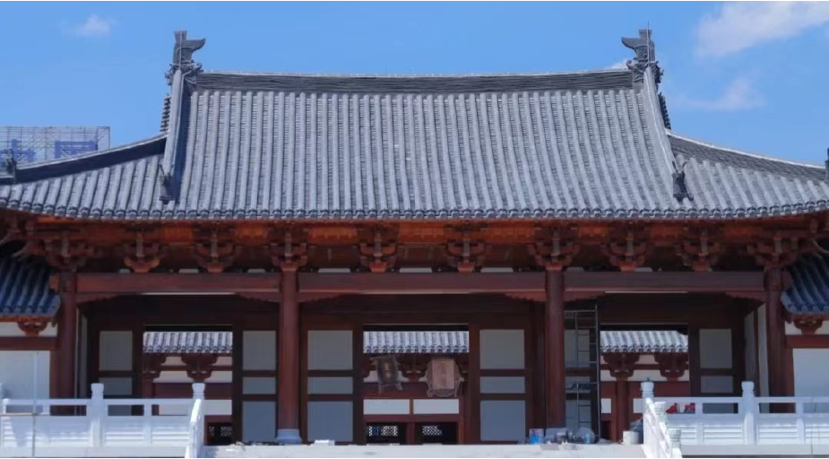

德寿宫
[de shou gong]

原为南宋宰相秦桧的旧第，因有望气之人称“有王气”，待秦桧亡故后就收归官有，改筑新宫。1162年，宋高宗移居新宫，并改名“德寿宫”。之后，宋孝宗为表孝敬，将德寿宫一再扩建，时称“北内”或“北官”，其四至范围：东接吉祥巷、南至望江路、西临中河、北靠水亭址。
德寿宫坐北朝南，当时占地17万平方米，其布局与皇城相近，官中建有德寿殿、后殿、灵芝殿、射厅、寝殿、食殿等十余座殿院，还有大量园林景观，中有金鱼家池、小西湖、湖上有万寿桥，桥中间有四面亭，湖畔垒石为万寿山，以像飞来峰，峰上一座聚远楼、小西湖周边还有香远堂、清深堂、松菊三径、梅坡、月榭、芙蓉冈，浣溪等景观。精美程度比南宋皇城有过之无不及。
2020年10月24日，杭州拟在中河高架东侧，河坊街南侧，建国南路西侧，望江路北侧建设德寿宫遗址保护工程暨南宋博物院（一期）（中西区除汪宅）工程，并有望在2022年前建成。（一期）工程总用地面积21182平方米，总建筑面积8698平方米，全部为地上建筑，占地总面积7300平方米，容积率0.41，建筑密度34.5%，绿地率23%。总平面图显示，该工程由遗址保护厅棚、茶室组团和临水歇山亭组团等部分组成，在地块内将保留部分市保建筑。该规划公示将至2020年11月2日。